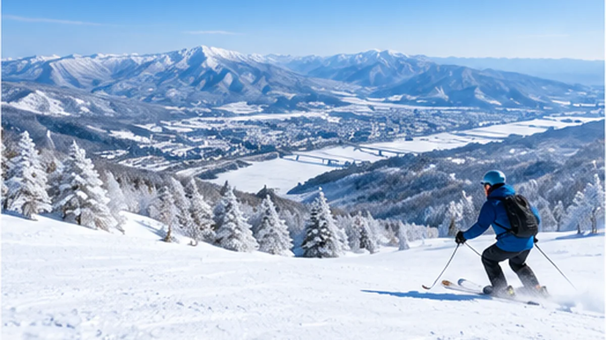
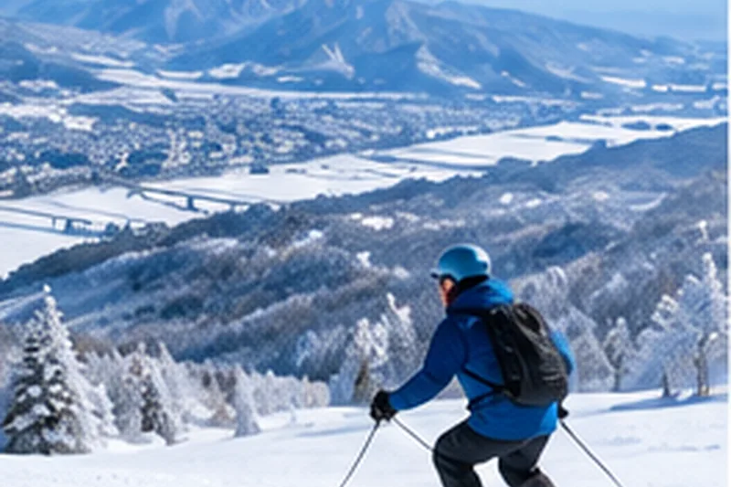
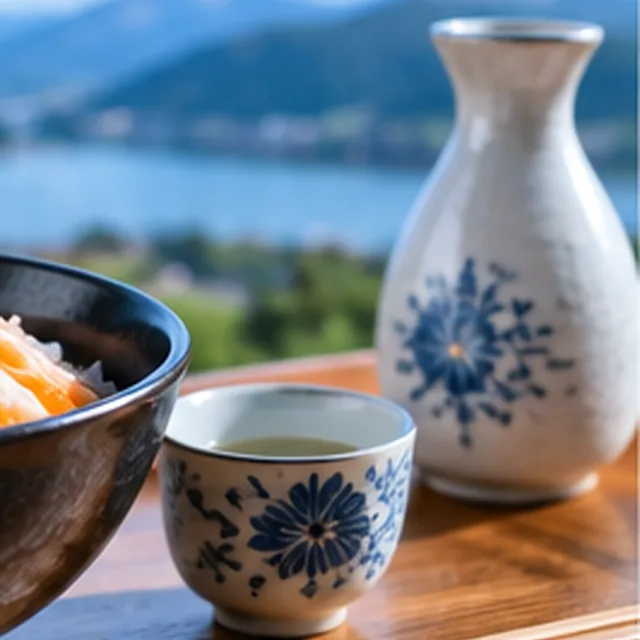
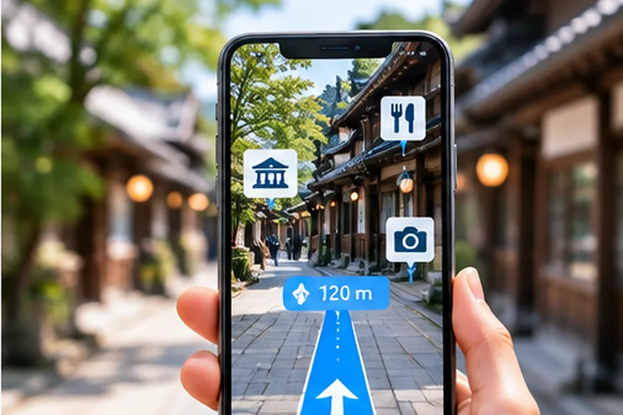

AI관광
AI로 지역의 매력을 발견하고, 관광·문화·체험을 연결하는 스마트 관광 플랫폼의 여행 정보를 소개합니다.

일본 니가타 나가오카에서 살아보는 1달
NAGAOKA
SNOW & SAKE 30
스키 · 온천 · 사케 · 미식 · 문화 · 워케이션
01
30일 일정 개요
스키 – 15일
나가오카·도카마치·우오누마 주요 스키장 이용
온천 & 힐링
지역 온천 패스 제공 및 피로 회복
사케 & 미식
양조장 방문, 시음, 지역 음식 체험
지역 교류
주민 교류, 문화 체험, 커뮤니티 활동
워케이션
공유오피스, Wi-Fi, 장기 체류 지원
02
주요 지역 & 추천 스키장
우오누마
- 스와노키 스키장
- 고이데 스키장
- 오쿠타다미 스키장
도카마치
- 마츠다이 스키장
- 마츠노야마 온천 스키장
- 아테마 스키장
나가오카
- 나가오카 시영 스키장
- 고시지 스키장
- 도치오 패밀리 스키장
03
프로그램 콘셉트
유명 스키장을 여행하는 관광이 아니라
설국에서 현지인처럼 살아본다!
설국에서 현지인처럼 살아본다!
생활 거점
숙소 기반 장기체류
로컬 스키장 순환
다양한 지역 스키장 체험
온천 & 휴식
지역 온천에서 회복
사케 & 미식
로컬 양조장과 지역 음식 체험
지역 교류
주민과의 관계 형성


04
4주 테마 구성
1주차
Nagaoka Local Snow Life (1~7일)
나가오카 정착, 생활·스키·사케 체험
2주차
Tokamachi Snow Country (8~14일)
설국 문화, 온천, 로컬 스키 집중 체험
3주차
Uonuma Snow & Food (15~21일)
우오누마 스키와 쌀·발효·food 체험
4주차
My Niigata Life (22~30일)
AI 맞춤 추천으로 나만의 스키 & 지역생활
05
30일 상세 일정
DAY 1 ~ DAY 30
- DAY 1나가오카 도착 / 숙소 입주 / 오리엔테이션
- DAY 2생활권 안내 / 정보키트 / 장비 준비 / 일상 가이드
- DAY 3나가오카 시영 스키장 / 스키
- DAY 4나가오카 시영 스키장 / 스키 레슨
- DAY 5시내 탐방 / 사케 문화 프로그램 / 사케 페어링
- DAY 6고시지 스키장 / 스키
- DAY 7자유시간 / 카페·쇼핑 / 휴식
- DAY 8도치오 패밀리 스키장 / 스키
- DAY 9자유 스키/휴식 / 시장 탐방 / 사케·미식
- DAY 10도카마치 이동 / 설국지역 탐방 / 향토음식
- DAY 11마츠다이 스키장 / 스키 / 온천
- DAY 12마츠노야마 온천 스키장 / 스키·온천
- DAY 13설국문화 탐방 / 공예·미술·체험 / 로컬 레스토랑
- DAY 14아테마 스키장 / 파우더 스키 / 온천·휴식
- DAY 15나가오카 복귀 / 휴식·세탁 / 장보기
- DAY 16나가오카 시영 / 고시지 교차 자유 스키
- DAY 17사케 양조장 체험 / 양조장·산업 탐방 / 사케 페어링 디너
- DAY 18우오누마 이동 / 지역생활 탐방 / 향토음식
- DAY 19스와노키 스키장 / 스키 / 온천
- DAY 20고이데 스키장 / 스키
- DAY 21농업·쌀 문화 체험 / 발효·식문화 체험 / 사케·미식
- DAY 22스와노키/인근 스키장 / 자유 스키 / 온천
- DAY 23나가오카 복귀 / 공유오피스·교류 / 주민교류
- DAY 24AI 추천 스키장(오늘의 베스트) / 스키·온천
- DAY 25AI 추천 스키장(오늘의 베스트) / 스키·미식
- DAY 26휴식·카페 / 기업·대학·문화교류 / 교류회
- DAY 27선호 스키장 재방문 / 자유 스키
- DAY 28Best Snow AI 추천 / 스키 챌린지
- DAY 29자유시간·쇼핑 / 30일 활동 정리 / 페어웰 디너
- DAY 30체크아웃 / 이동 / 귀국

06
숙소 & 거점
07
AI 관광·문화 플랫폼AI Concierge
- STEP 01 사용자 프로필 취향, 음식, 체력, 경험 등을 기반으로 개인화
- STEP 02 AI 분석 날씨, 적설, 이벤트, 지역 데이터를 분석
- STEP 03 오늘의 일정 추천 스키장·온천·음식·관광을 조합해 최적의 하루 일정을 추천
- STEP 04 피드백 수집 만족도, 리뷰, 선호 데이터를 학습
- STEP 05 다음 일정 개선 사용자 피드백을 반영해 다음 일정을 자동 최적화
08
포함 사항
- 숙박(30일)
- 스키장 리프트권(15일)
- 온천 패스
- 교통(지역 셔틀/렌터카 옵션)
- 사케 & 미식 & 체험 프로그램
- AI Concierge 서비스
- 여행자 보험 / 비자 지원
09
추천 대상
- 워케이션 원격근무자
- 스키 & 파우더 매니아
- 한달살기 체험 희망자
- 일본문화·사케 관심자
10
지역과 함께 만드는 지속 가능한 여행
- 빈집 활용
- 장기체류
- 지역 소비
- 일자리 창출
- 지역 활성화
AI관광 웹사이트
나가오카의 관광명소·사케·쌀·스키·온천·숙소와 한달살기 정보를 담은 한국어 여행 가이드를 확인하실 수 있습니다.